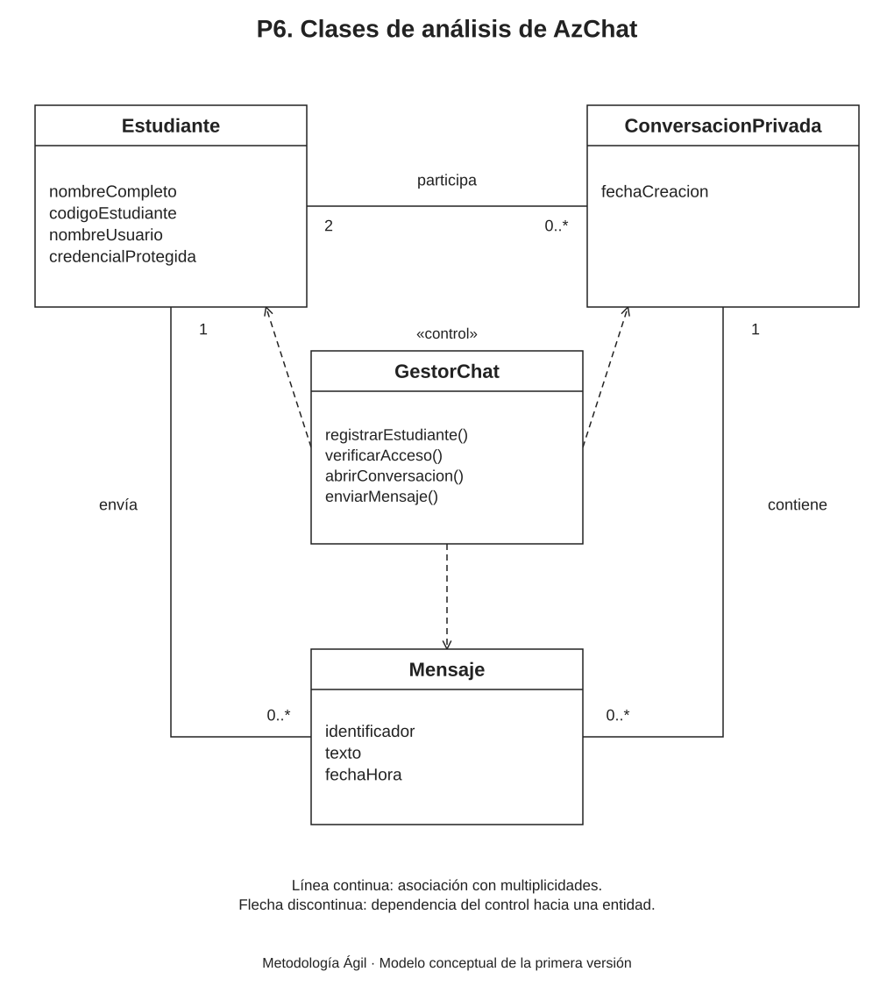

Propósito del modelo
El diagrama de clases de análisis organiza los conceptos necesarios para entender AzChat. Describe qué representa cada clase y cómo se relaciona con las demás. Se basa en los requisitos de P3, los casos de uso de P4 y las reglas detalladas de P5.
El modelo tiene tres entidades del dominio y una clase de control. Sus nombres y responsabilidades son conceptuales; el diseño de componentes, las bibliotecas y las tablas se definirán en pasos posteriores.
Diagrama de clases de análisis

Modelo editable: Clases_analisis_AzChat.drawio. Puede abrirse en Draw.io mediante Archivo → Abrir desde → Dispositivo.
Clases y responsabilidades
| Clase | Descripción |
|---|---|
| Estudiante | Representa una cuenta que puede conversar. Contiene nombre completo, código de estudiante, nombre de usuario y una credencial protegida. El nombre de usuario identifica al participante en el chat. |
| ConversacionPrivada | Representa el chat compartido por dos estudiantes distintos. Conserva su fecha de creación y reúne los mensajes de esa pareja. La misma pareja utiliza una única conversación. |
| Mensaje | Representa un texto conservado, su identificador, su fecha y hora y las relaciones con su emisor y su conversación. El identificador permite reconocer el mismo mensaje durante un reintento. |
| GestorChat | Es la clase de control conceptual. Coordina registro y acceso, apertura de conversaciones, validación, conservación y distribución de mensajes. Sus operaciones describen responsabilidades; no constituyen código implementado. |
La credencial protegida de Estudiante corresponde al hash de contraseña exigido por la ERS. No representa una contraseña guardada en texto original. Los datos de acceso no se muestran al buscar destinatarios.
Relaciones y multiplicidades
| Relación | Significado |
|---|---|
| Estudiante — ConversacionPrivada | Una conversación tiene exactamente 2 estudiantes. Un estudiante puede participar en 0..* conversaciones. El asterisco significa muchas. |
| Estudiante — Mensaje | Cada mensaje tiene 1 estudiante emisor. Un estudiante puede enviar 0..* mensajes. |
| ConversacionPrivada — Mensaje | Cada mensaje pertenece a 1 conversación. Una conversación puede contener 0..* mensajes; al crearse puede estar vacía. |
| GestorChat → entidades | Las líneas discontinuas indican que el control utiliza las entidades para cumplir sus responsabilidades. No expresan propiedad, herencia ni tablas de almacenamiento. |
Reglas del modelo
- Los dos participantes de una conversación son estudiantes distintos.
- Una pareja comparte una única conversación, sin importar quién la inicia.
- El emisor de un mensaje pertenece a la conversación de ese mensaje.
- Un mensaje conservado tiene un identificador único. Repetir el intento de un envío no crea otro mensaje si el original ya fue guardado.
- El historial permanece al cerrar sesión y no admite edición, borrado ni eliminación automática en la primera versión.
- El usuario y el código de estudiante son únicos; el ingreso requiere verificar la credencial protegida.
Relación con los casos de uso
| Casos de uso | Conceptos principales |
|---|---|
| CU-01 y CU-02. Registro y acceso | Estudiante y GestorChat permiten representar la cuenta y la comprobación de acceso. |
| CU-03 y CU-04. Inicio y consulta de chats | Estudiante y ConversacionPrivada representan los participantes y su conversación; GestorChat coordina la apertura y los permisos. |
| CU-05, CU-06 y CU-07. Mensajería e historial | Mensaje se relaciona con su emisor y su conversación. GestorChat coordina su conservación y distribución. |
| CU-08. Cerrar sesión | El acceso de la sesión termina. Estudiante, ConversacionPrivada y Mensaje permanecen conservados. |
La sesión es una condición de acceso en este modelo. Su representación técnica se describe en P8 y P9 mediante sesiones almacenadas en PostgreSQL, sin añadir una entidad de dominio adicional en este paso.
Equipo del proyecto
| Apellidos y nombres | Código |
|---|---|
| Apaza Quispe Antonio Vicente | 236876 |
| Arias Ramirez Alex | 236104 |
| Chura Chambilla Raul Cristian | 236567 |
| Escobedo Arapa Kenyi Blanca | 236171 |
| Mamani Pari Yimmy Jonathan | 237317 |
| Quispe Ramos Daniel Jhosimar | 236568 |
| Roque Mamani Vidman Ruis | 236232 |
| Vidal Fuentes Jordy Anthony | 236535 |